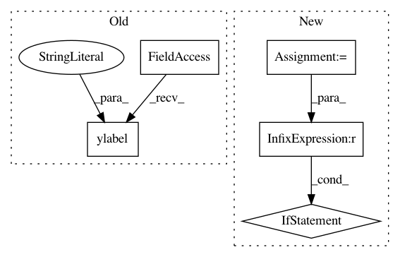

4a8d1ffcf12287d632fb25ef484344d68d987818,skopt/plots.py,,plot_convergence,#,11
Before Change
plt.title("Convergence plot")
plt.xlabel("Number of calls $n$")
plt.ylabel(r"$\min f(x)$ after $n$ calls")
plt.grid()
if yscale is not None:
plt.yscale(yscale)
After Change
true_minimum = kwargs.get("true_minimum", None)
yscale = kwargs.get("yscale", None)
if ax is None:
ax = plt.gca()
ax.set_title("Convergence plot")
ax.set_xlabel("Number of calls $n$")
ax.set_ylabel(r"$\min f(x)$ after $n$ calls")
ax.grid()
In pattern: SUPERPATTERN
Frequency: 4
Non-data size: 5
Instances
Project Name: scikit-optimize/scikit-optimize
Commit Name: 4a8d1ffcf12287d632fb25ef484344d68d987818
Time: 2016-07-20
Author: g.louppe@gmail.com
File Name: skopt/plots.py
Class Name:
Method Name: plot_convergence
Project Name: aertslab/pySCENIC
Commit Name: 2ddf94e48476ff253260a3364f76ee13a932e252
Time: 2018-06-15
Author: vandesande.bram@gmail.com
File Name: src/pyscenic/binarization.py
Class Name:
Method Name: plot_binarization
Project Name: neurodsp-tools/neurodsp
Commit Name: cfb0d47b03cc8cf4253224791b039bf3555cd27d
Time: 2019-04-09
Author: tdonoghue@ucsd.edu
File Name: neurodsp/plts/spectral.py
Class Name:
Method Name: plot_power_spectra
Project Name: neurodsp-tools/neurodsp
Commit Name: cfb0d47b03cc8cf4253224791b039bf3555cd27d
Time: 2019-04-09
Author: tdonoghue@ucsd.edu
File Name: neurodsp/plts/time_series.py
Class Name:
Method Name: plot_time_series